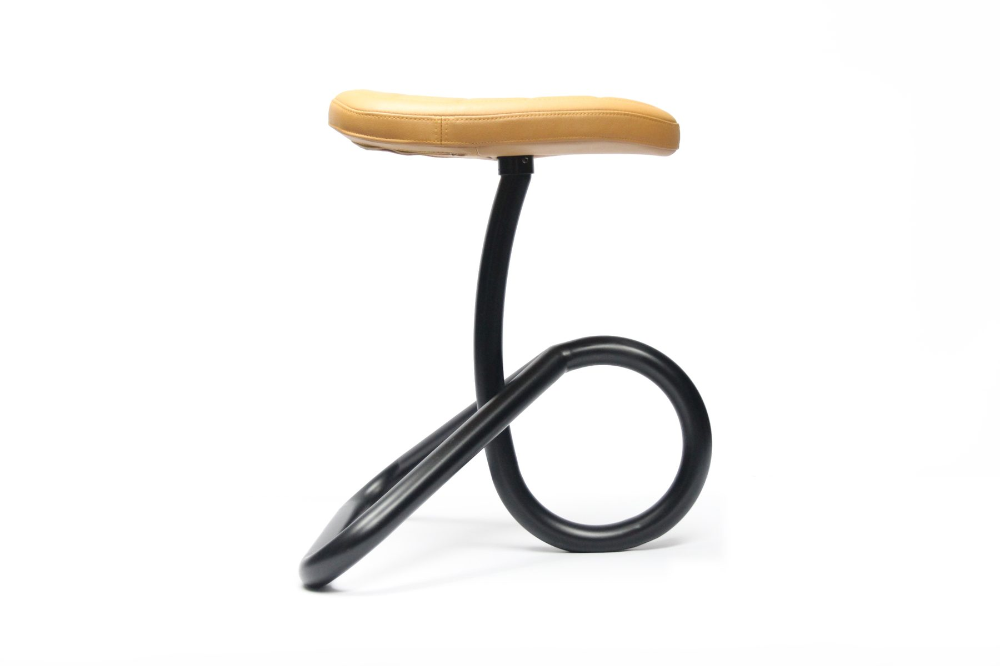
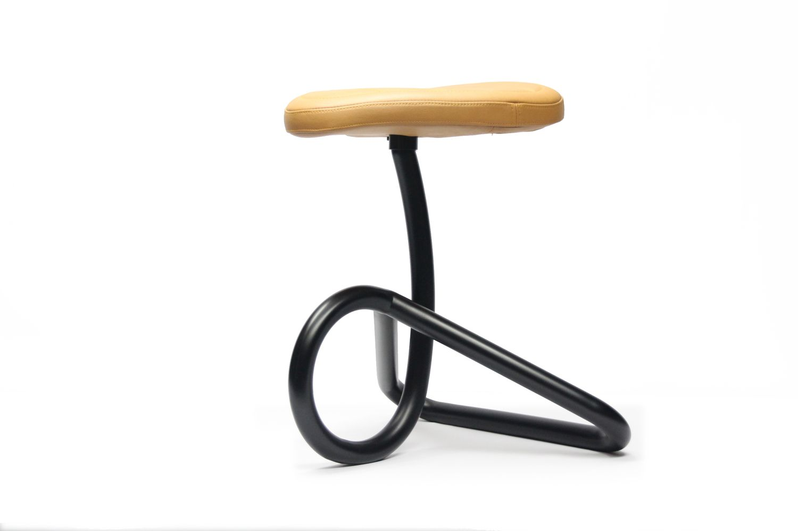

WORK 20 / 29
Miss J
A playful stool inspired by childhood cycling.
Year2013
MaterialsSteel and leather
StageProduced

DESIGN STORY
Miss J draws on childhood memories of bicycles and tricycles. A circular, wheel-like base turns a familiar stool into a playful study of movement and balance. Its compact form carries a light-hearted reference to early experiences of riding, making a simple seat feel unexpectedly personal.
